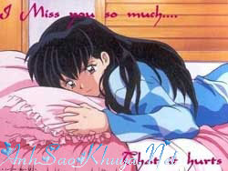
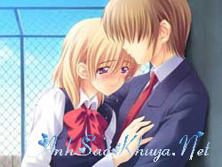

|
- Đừng buồn, đừng cười, đừng trách, và cũng đừng bao giờ nhớ về nhóc nghe anh. Hôm nay, cô bé ngốc vô tư và hay cười của anh đang khóc, khóc khi viết entry này cho anh.Entry cuối cùng. Chỉ dành riêng cho anh. Anh ơi, nhóc của anh sắp phải đi rồi. Nhóc cũng chẳng biết bắt đầu từ đâu cả. Nhóc nhớ anh thật nhiều, nhiều hơn những gì nhóc nghĩ.Nhóc chỉ muốn đến bên anh, được ở bên anh mãi thôi.Nhóc yêu anh nhiều lắm. Xin đừng cười nhóc nhé anh. Nhóc muốn chờ, chờ đến đúng 12h giờ tối thứ 7 để viết entry này cho anh. Nhưng nhóc không thể, nhóc không thể kiềm nén được tình cảm của mình, giống như đã luôn cố gắng giữ chặt trong suốt thời gian qua.  Nhớ ngày đó,vì có quá nhiều chuyện buồn trong gia đình, nhóc đã cắt mọi liên lạc với tất cả mọi người.Vậy mà trong suốt hơn 3 tháng trời, gần như tuần nào cũng vậy, cứ vào 12h tối thứ 7, cái thời điểm chuyển giao của 2 ngày cuối tuần, anh lại nhắn cho nhóc một tin:” nhóc ah, giờ em đang ở đâu? Cuối tuần vui vẻ nghe em” Gần 15 tin nhắn, cùng một nội dung, cùng một thời điểm, vẫn đều đặn được gửi đi dù ở bên kia không hề đáp lại.Và cũng kể từ giờ phút ấy, nhóc biêt rằng: người duy nhất luôn quan tâm tới nhóc chính là anh.Nhóc yêu anh thật nhiều. Gần 5 năm quen anh, dù chưa một lần gặp gỡ, nhưng anh đã làm cho nhóc rất nhiều. Những lời động viên, chia sẻ, rồi những nụ cười, những niềm vui khi được trò chuyện cùng anh.Anh- người luôn lắng nghe mỗi khi nhóc có chuyện buồn..Anh- người luôn cười khi nghe nhóc mắng yêu.Nhóc xin lỗi vì nhiều lúc, nhóc đã giỗi hờn anh mà đâu có biết rằng, anh còn có quá nhiều gánh nặng trong cuộc sống.Anh ơi, nhóc sẽ không bao giờ quên. Nhóc rất vui, vui vì anh cũng đã coi nhóc như một người bạn, một người em gái tốt, để những chuyện vui buồn, anh cũng kể cho nhóc nghe. Nhóc nhớ nỗi buồn của anh khi anh không thành công trong kì thi ĐH, nhóc biết chỉ vì anh sơ ý mà thôi.Nhóc nhớ rất nhiều chững chuyện vui buồn của anh. Và ..nhóc nhớ những gì mà anh kể về chị ấy.Anh ơi, ước gì nhóc có thể làm được gì để giúp cho anh, ước gì chị ấy có thể hiểu được tình cảm của anh, ước gì chị ấy có đáp lại tình cảm của anh. Nhóc biết, có nhiều nỗi buồn của anh, anh đã cố giấu kín không cho ai biết, anh chỉ muốn đi giúp đỡ mọi người, mà chẳng bao giờ để người khác có cơ hội giúp mình gì cả.Nhóc đã âm thầm đọc từng dòng Blog của anh, nhóc đã dùng chính con tim của một người đang thầm yêu trộm nhớ để hiểu được anh. Và nhóc lại càng yêu anh hơn. Đừng cười nhóc nghe anh. Dù biết rằng anh vẫn yêu chị ấy mà nhóc vẫn yêu anh. Dù biết rằng có thể sẽ chẳng bao giờ nhóc có được tình cảm của anh mà nhóc vẫn yêu anh. Nhưng nhóc sợ, và nhóc đã không có đủ can đảm để nói ra tình cảm của mình.  Anh biết không. Nhừng bài thơ , những lời tâm sự của anh viết rất hay và cảm dộng. Nhóc cảm nhận được sự chân thành trong từng câu từng chữ. Và đâu đó, có những bài thơ, nhóc biết, anh chỉ vô tình viết ra, nhưng nhóc lại có cảm giác như nó lại chính là cuộc đời của mình. Câu chuyện của cuốn sổ thầm yêu người đã luôn gửi gắm tâm sự vào nó, nhưng lại không bao giờ giám nói ra. Người kia thì chỉ luôn xem cuốn sổ như một người bạn tốt mà thôi.Anh ơi, có bao giờ anh nghĩ cuốn sổ ấy là nhóc không, có bao anh nghĩ nhóc đã và đang thầm yêu một ngưới rất nhiều không anh ? Nhóc vẫn thường nói với anh rằng: nhóc đang thầm yêu một người.Anh đã luôn động viên và tin rằng một ngày người ấy sẽ đáp lại tình cảm của nhóc nếu như biết được tình cảm chân thành của nhóc.Vậy nhưng,anh có biết rằng: người mà nhóc luôn muốn nói tới là ai không. Đã có quá nhiều lần nhóc tự nhủ với mình: nhóc sẽ nói ra tất cả để rồi sau đó có như thế nào cũng được.Nhưng rồi, nhcos lại sợ mất anh. Thì thôi, nhóc sẽ cố học tập anh: yêu chỉ mong cho người mình yêu hạnh phúc. Nhóc chấp nhận lặng im. Nhìn thấy anh đau khổ vì người mình yêu, nhóc buồn nhiều lắm.. Có thể anh sẽ cười nhóc vì một tình yêu dại khờ dành cho một người chưa bao giờ gặp nhau.Nhưng gần 5 năm quen anh, làm bạn với anh, chia sẻ cùng anh, đấy đã là thời gian quá đủ để nhóc hiểu về anh rồi.. Nhóc biết, anh không đẹp trai như nhiều người nhóc quen. Nhưng anh ơi, nhóc yêu anh đâu phải vì điều đó.Nhóc yêu anh bới “ tình cảm chân thành mà anh dành cho bạn bè, bới tình yêu chung thủy mà anh đã dành cho chị ấy trong suốt những năm qua”.Nhóc xin lỗi vì nhóc đã không cho anh biết điều này sớm hơn. Đừng trách nhóc nghe anh. Anh ơi Entry cuối cùng này, nhóc muốn được trở về bên anh, được làm láng giềng của anh bên Plus, dẫu sơ sài nhưng lại là tất cả tình cảm của nhóc dành cho anh.Anh có biết tại sao nhóc đã xóa ngôi nhà của mình bên zing không anh, vì nhóc đã chót lỡ viết lên tình cảm thật của mình ở đó, nhưng lại không thể xóa . Sợ rằng anh đọc được nên đành vậy thôi. Nhóc xin lỗi. “Trong bao năm qua, anh chưa một lần hỏi địa chỉ nhà của nhóc, chưa một lần hỏi số ĐT của nhóc, và mới chỉ có 2 lần xem wc của nhóc.” Có thể đấy là điều tốt để khi xa nhóc, anh sẽ nhanh chóng quên đi. Nhóc không trách anh vì điều ấy, mà trái lại, chính điều đó khiến nhóc càng trân trọng tình cảm của anh, khác hẳn với những người bạn online khác:"luôn quan tâm tới một người mà không cần biết họ là ai, họ ở đâu." Anh ơi, nhóc nhớ anh nhiều lắm.Nhóc không thể cầm được nước mắt của mình.Cứ nghĩ ngày mai phải xa anh, thực sự nhóc không biết mình phải làm gì cả.Tối nay nhóc không ngủ đâu, nhóc nhớ anh thật mà.Nhóc sẽ khóc, và nhóc sẽ còn khóc nữa.Nhóc đã nghĩ từ rất lâu rồi, và lần này nhóc sẽ ra đi thật sự.Ở nơi xứ người, nhóc sẽ cố gắng học và chỉ học mà thôi.Nhóc không muốn khiến ai buồn và cũng sẽ không bao giờ để mình phải buồn vì ai đó nữa. Nhóc sẽ quên tất cả. Không biết liệu nhóc có thể yêu được một người như nhóc đã từng yêu anh hay không. Nhưng điều gì cũng có thể xảy ra phải không anh.Nhóc sẽ cố gắng. Anh ơi, hãy hạnh phúc nghe anh, hãy hạnh phúc thay cho “em” nữa. Em yêu anh rất nhiều. Hãy cứ xem như chưa bao giờ quen em. Tạm biệt anh, người mà em đã yêu bằng cả trái tim dại khờ của mình. Em đi đây Nguồn: Bản quyền (bucthunho)ASK || Tham gia bình luận TẠI ĐÂY ||
Bạn vô tình đọc ở đâu đó một câu chuyện tình cảm động hoặc một câu chuyện do chính bạn viết ra. Hãy đến với chúng tôi để cùng nhau chia sẻ: wWw.anhsaokhuya.net
Chung tay vì một thế giới online lành mạnh !
|